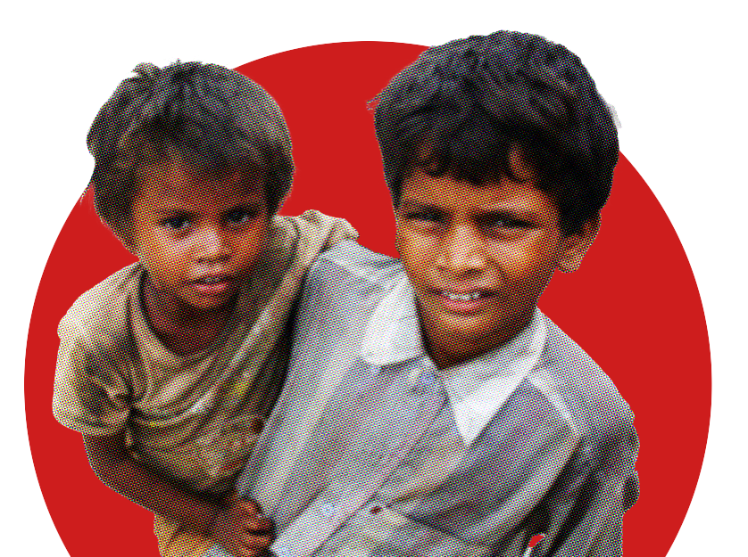
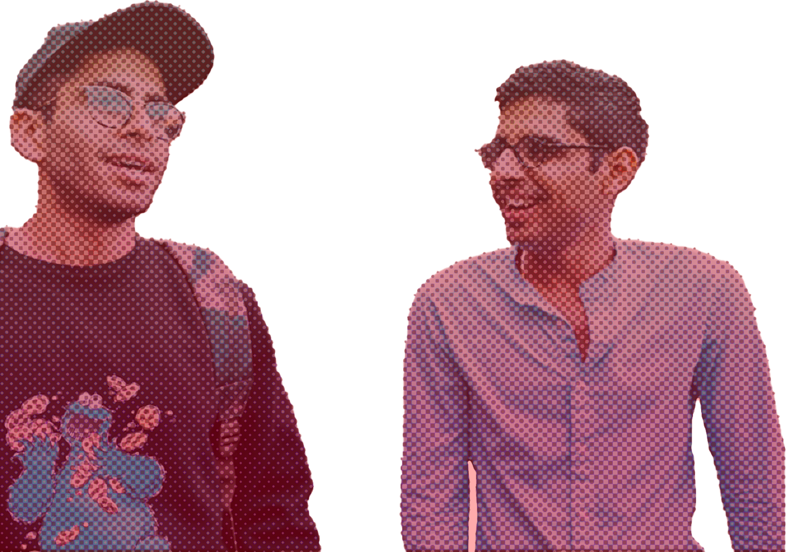

Politicians win elections.
MADsters Make a Difference.
Learn to:

30% of all children living in extreme poverty are in India.
And they are stuck in this cycle of poverty for the next 7 generations.

That is too many children
and too damn long.
Join MAD to
rewrite this story!
MADster’s Make a Difference by
Mentoring vulnerable children to progress in life.
Building strong communities of young people who care.
Growing into the best versions of themselves.



Who is it for?
YOUNG LEADERS WHO
are serious about their
commitment to changing both
the world and themselves
have a special interest in building
a better world for children and
leveling the playing field
want a community of
peers to do it with
As a MADster, you'll
have the opportunity to
Get to know the vulnerable children in your
community and be part of their life
Discover your true voice, get pushed
beyond your known limits and hone
your leadership
skills
Make meaningful connections with like-
minded leaders from across the country
Whether you're a college student looking to gain hands-on
experience or a young professional seeking to give back to
your community MAD offers a caring community for growth,
learning, purpose and personal
development.
What is expected of you?
- A one year commitment
- 3 hours every week:
2 hours: Mentoring Circle: Mentoring
children by providing the necessary
care, skills and resources required
to progress in life.
1 hour: Learning Circle: To develop
your mentoring, leadership and
community development skills.
1 hour: Organising community and
resources online and offline
We work towards
a day when
→ Our generation is the last generation that experienced Intergenerational poverty
→ Our generation is the first generation where Young people took ownership of leading their community forward